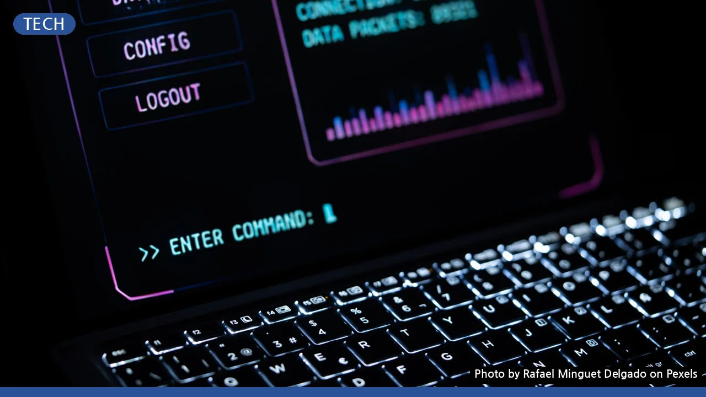

잃어버린 비밀번호는 이제 그만! 비밀번호 관리자 앱 완벽 설정 가이드
사진: Rafael Minguet Delgado / Pexels (무료 이미지, 출처 표기)
매일 잊어버리는 비밀번호, 이렇게 해결하세요!
수많은 웹사이트와 서비스에 가입하며 기억해야 할 비밀번호는 점점 늘어납니다. 복잡한 규칙과 주기적인 변경 요구는 스트레스 요인이 되기 쉽습니다. 똑같은 비밀번호를 반복해서 사용하면 보안에 취약해지고, 매번 새로운 비밀번호를 만들고 기억하는 것도 쉽지 않습니다. 하지만 비밀번호 관리자 앱을 활용하면 이러한 고민을 한 번에 해결할 수 있습니다.
이 글에서는 비밀번호 관리자 앱이 왜 필요한지부터 나에게 맞는 앱을 고르는 방법, 그리고 앱을 처음 설정하고 안전하게 활용하는 구체적인 절차까지 자세히 안내합니다. 더 이상 비밀번호 때문에 불편함을 겪지 않고, 디지털 생활의 보안과 편의성을 동시에 높일 수 있도록 도와드리겠습니다.
비밀번호 관리자 앱, 왜 필요할까요?
비밀번호 관리자 앱은 모든 비밀번호를 암호화하여 한곳에 저장하고 관리하는 도구입니다. 이 앱을 사용하면 더 이상 약하고 중복된 비밀번호를 사용하지 않아도 되며, 강력한 무작위 비밀번호를 자동으로 생성하고 기억할 수 있습니다.
- 강력한 보안: 각 서비스마다 고유하고 복잡한 비밀번호를 사용할 수 있어 해킹 위험을 크게 줄입니다. 앱 자체는 강력한 암호화 기술로 보호됩니다.
- 편의성 향상: 웹사이트나 앱 로그인 시 자동으로 비밀번호를 입력해주므로, 일일이 타이핑하거나 기억할 필요가 없어 시간을 절약합니다.
- 정보 관리: 비밀번호 외에도 신용카드 정보, 개인 메모, 소프트웨어 라이선스 등 중요한 정보를 안전하게 보관할 수 있습니다.
나에게 맞는 비밀번호 관리자 앱 고르기
시중에는 다양한 비밀번호 관리자 앱이 존재하며, 각기 다른 기능과 요금제를 제공합니다. 자신의 사용 패턴과 중요하게 생각하는 가치에 따라 적합한 앱을 선택하는 것이 중요합니다. 다음 표를 참고하여 주요 앱들의 특징을 비교해 보세요. 2026년 10월 기준으로 작성되었으며, 자세한 내용은 각 앱의 공식 홈페이지에서 확인하는 것이 좋습니다.
앱을 선택할 때는 주로 사용하는 기기(PC, 스마트폰)에서 원활하게 동기화되는지, 필요한 보안 기능(예: 2단계 인증)을 지원하는지, 그리고 개인 정보 보호 정책은 투명한지 등을 종합적으로 고려해야 합니다.
비밀번호 관리자 앱 초기 설정 방법
비밀번호 관리자 앱을 효과적으로 사용하기 위한 초기 설정은 간단하면서도 중요합니다. 다음 단계를 차근차근 따라 해 보세요.
1. 앱 선택 및 다운로드
앞서 비교한 정보를 바탕으로 마음에 드는 비밀번호 관리자 앱을 선택하고, 공식 웹사이트 또는 각 기기의 앱 스토어(Google Play 스토어, Apple App Store)에서 다운로드하여 설치합니다. 신뢰할 수 없는 경로로 앱을 설치하면 보안 위험이 커질 수 있으니 주의해야 합니다.
2. 마스터 비밀번호 설정
앱을 처음 실행하면 '마스터 비밀번호(Master Password)'를 설정하라는 메시지가 나타납니다. 마스터 비밀번호는 앱에 저장된 모든 정보를 해독하는 열쇠이므로, 절대로 잊어서는 안 되며 그 어떤 비밀번호보다 강력하고 예측 불가능하게 설정해야 합니다.
- 최소 12자 이상, 대문자, 소문자, 숫자, 특수문자를 조합합니다.
- 개인 정보(생일, 전화번호)나 흔한 단어는 피하고, 긴 문장 형태의 '패스프레이즈'도 좋은 방법입니다.
- 마스터 비밀번호를 잊어버리면 저장된 모든 비밀번호를 복구할 수 없을 수도 있으니, 안전한 곳에 백업하는 방법을 미리 숙지해두는 것이 좋습니다.
3. 데이터 가져오기 및 동기화
기존에 사용하던 웹 브라우저(Chrome, Edge, Firefox 등)에 저장된 비밀번호가 있다면, 대부분의 비밀번호 관리자 앱은 해당 데이터를 가져오는 기능을 제공합니다. 앱 내의 '가져오기(Import)' 또는 '데이터 가져오기(Data Import)' 메뉴를 찾아 안내에 따라 진행하세요.
여러 기기에서 앱을 사용하려면 '동기화(Sync)' 기능을 설정해야 합니다. 보통 계정 생성 후 로그인하면 자동으로 동기화되지만, 설정에서 동기화 여부나 빈도를 확인할 수 있습니다. 모든 기기에서 최신 비밀번호 정보를 공유할 수 있게 됩니다.
4. 브라우저 확장 프로그램 설치
로그인 자동 완성 기능을 원활하게 사용하려면 주로 사용하는 웹 브라우저에 비밀번호 관리자 앱의 '확장 프로그램(Extension)'을 설치해야 합니다. 앱 설정 내에서 브라우저 확장 프로그램 설치 링크를 찾거나, 각 브라우저의 확장 스토어에서 직접 검색하여 설치할 수 있습니다.
5. 2단계 인증 설정
앱 자체의 보안을 더욱 강화하기 위해 '2단계 인증(Two-Factor Authentication, 2FA)'을 설정하는 것을 권장합니다. 이는 마스터 비밀번호 외에 추가적인 인증 수단(예: 스마트폰 앱을 통한 OTP, 지문 인식 등)을 요구하는 것으로, 만약 마스터 비밀번호가 유출되더라도 제3자가 쉽게 접근할 수 없게 만듭니다.
비밀번호 관리자 앱 사용 시 주의할 점
편리하고 안전한 비밀번호 관리자 앱도 올바르게 사용하지 않으면 오히려 보안 위험에 노출될 수 있습니다. 다음 사항들을 유의하여 안전하게 앱을 활용하세요.
- 마스터 비밀번호 보안: 가장 중요합니다. 어떤 상황에서도 마스터 비밀번호를 타인에게 알려주거나 쉬운 곳에 기록해두지 마세요. 정기적으로 변경하는 것도 좋은 습관입니다.
- 기기 보안 강화: 비밀번호 관리자 앱이 설치된 스마트폰이나 PC는 항상 잠금 기능을 활성화하고, 최신 보안 업데이트를 유지해야 합니다. 공용 PC에서는 앱을 사용하지 않는 것이 안전합니다.
- 정식 앱 사용 및 업데이트: 반드시 공식 스토어나 웹사이트를 통해 앱을 다운로드하고, 보안 취약점 패치를 위해 항상 최신 버전으로 업데이트해야 합니다.
- 백업 계획: 앱 서비스 종료, 계정 잠금 등 만일의 사태에 대비해 암호화된 비밀번호 데이터를 백업하는 방법을 알아두고 주기적으로 백업하세요.
자주 묻는 질문
Q1. 마스터 비밀번호를 잊어버리면 어떻게 되나요?
대부분의 비밀번호 관리자 앱은 마스터 비밀번호 분실 시 복구가 매우 어렵거나 불가능하도록 설계되어 있습니다. 이는 타인이 무단으로 접근하는 것을 막기 위한 강력한 보안 조치이므로, 마스터 비밀번호는 반드시 기억해야 합니다. 일부 앱은 복구 코드를 제공하기도 하지만, 이 역시 안전하게 보관해야 합니다.
Q2. 비밀번호 관리자 앱은 정말 안전한가요?
비밀번호 관리자 앱은 강력한 암호화 기술을 사용하여 데이터를 보호합니다. 마스터 비밀번호만 안전하게 관리하고 2단계 인증을 활성화하는 등 사용자가 보안 수칙을 잘 따른다면, 개별 웹사이트마다 다른 복잡한 비밀번호를 사용하는 것보다 훨씬 안전합니다. 앱 개발사의 보안 사고 발생 가능성도 고려해야 하지만, 대부분의 경우 사용자의 관리 소홀로 인한 문제가 더 많습니다.
Q3. 스마트폰에서도 편리하게 사용할 수 있나요?
네, 대부분의 비밀번호 관리자 앱은 스마트폰(iOS, Android) 앱을 제공하며, 생체 인식(지문, 얼굴 인식) 기능을 활용해 편리하고 안전하게 잠금을 해제하고 비밀번호를 자동 완성할 수 있습니다. PC와 스마트폰 간의 비밀번호 동기화도 원활하게 이루어져 모든 기기에서 최신 정보를 이용할 수 있습니다.
🔗 이 글도 함께 보면 좋아요: 비밀번호 관리자 앱, 이것만 알면 끝? 헷갈리는 5가지 질문 완벽 정리
관련 추천 상품
비밀번호 관리 앱, 패스워드 매니저 관련 인기 상품 보러가기
이 포스팅은 쿠팡 파트너스 활동의 일환으로, 이에 따른 일정액의 수수료를 제공받습니다.